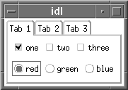

Tab widgets create a “tabbed” interface that allows the user to select one of a list of rectangular display areas to be displayed in a single space (the tab set). The displayed interface elements are contained in base widgets — that is, selecting a tab displays the contents of a specified base widget within the tabbed interface. See WIDGET_TAB for a complete description of the function used to create tab widgets.
|
 |